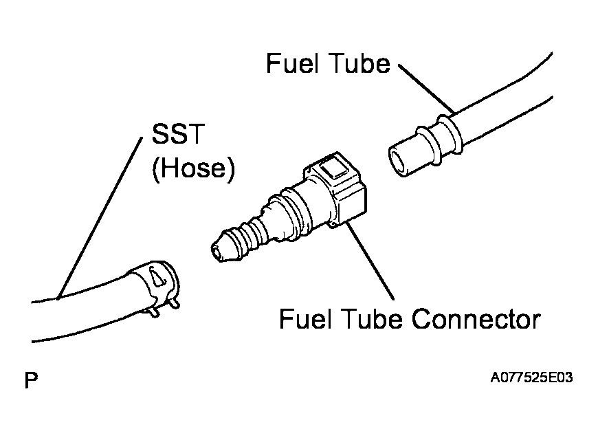
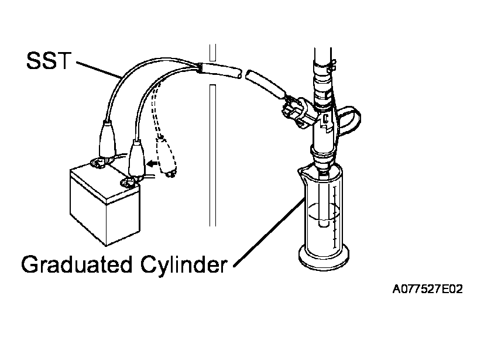

Fuel Injector: Inspection
- INSPECT FUEL INJECTOR ASSEMBLY
- Inspect the resistance.
- Measure the resistance between the terminals.
Standard resistance: 13.5 to 14.2 Ω at 21°C (70°F)
If the result is not as specified, replace the injector assembly.
- Measure the resistance between the terminals.
- Inspect the injector operation.CAUTION:
- Perform the test in a well-ventilated area and be careful of flames.
- Carefully handle the fuel tube connector.
- Prepare a fuel tube connector.
HINT:
Part No. 23901-21060
- Connect SST and the fuel tube connector to the fuel pipe.

Courtesy of © TOYOTA, LICENSE AGREEMENT TMS1002SST 09268-41047 (95336-08070)
CAUTION: After following the precautions of the FUEL SYSTEM, connect the fuel tube connector (quick type). - Install a new O-ring to the injector.
- Connect SST (union and hose) to the injector, and hold the injector and union with SST (clamp).
SST 09268-41047 (95336-08070, 09268-41110, 09268-41300), 09842-30080
- Put the injector into a graduated cylinder.
HINT:
Install a suitable vinyl tube onto the injector to prevent fuel spray.
- Operate the fuel pump (see FUEL INJECTOR ).
- Connect SST (wire) to the injector and battery for 15 seconds, and measure the injection volume with the graduated cylinder. Test each injector 2 or 3 times.
SST 09842-30080
Standard injection volume
INJECTION VOLUME AND DIFFERENCE BETWEEN INJECTORSInjection Volume Difference between cache injector 47 to 58 cm3 (2.9 to 3.5 cu in.) per 15 seconds 11 cm3 (0.6 cu in.) or less 
Courtesy of © TOYOTA, LICENSE AGREEMENT TMS1002NOTE: Always do the switching at the battery side.If the injection volume is not as specified, replace the injector assembly.
- Inspect the leakage.
- In the condition above, disconnect the test probes of SST (wire) from the battery and check the fuel leakage from the injector.
Standard fuel drop: 1 drop or less in 12 minutes
If the injection volume is not as specified, replace the injector assembly.
- In the condition above, disconnect the test probes of SST (wire) from the battery and check the fuel leakage from the injector.
- Inspect the resistance.